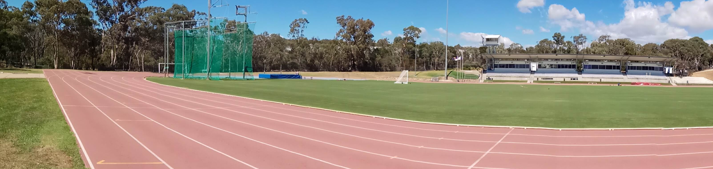
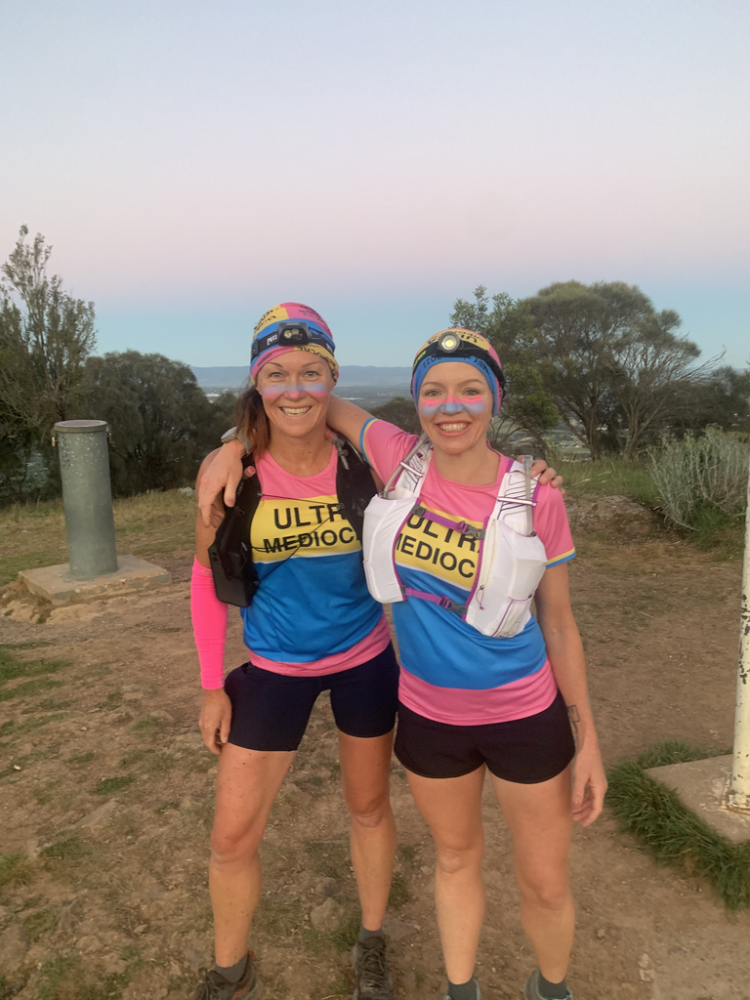
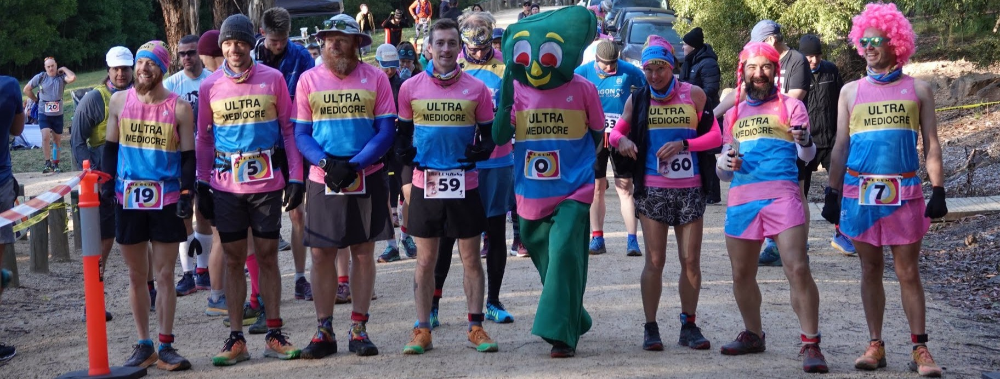
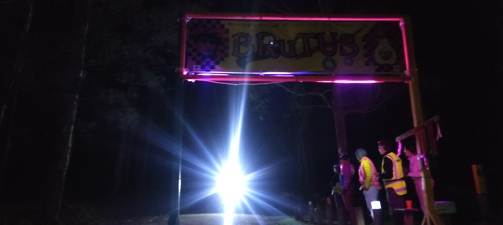
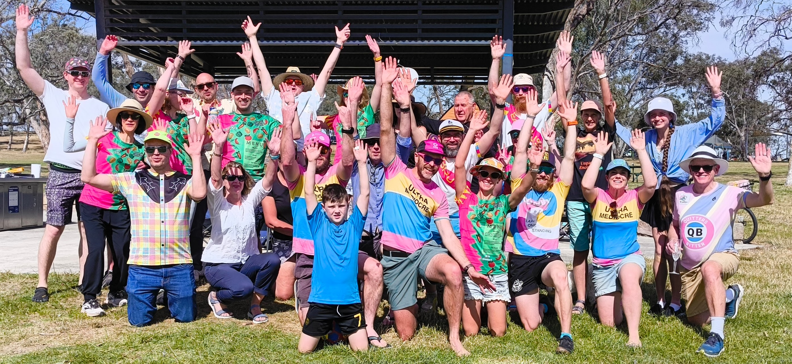

Ultra Mediocre Runners of Canberra • Est. 2020 • Incorporated 27 Jan
2021
In 2020 the world was shutting down. At the same time a small group of Canberra runners were
getting serious about ultra distances, but with the threat of Covid-19 transmissions,
ultrarunning events began to drop from the calendar.
The last straw was the Canberra 24 and 48-Hour Track Race at the Australian Institute of Sport.
We believed it would go ahead, but days before the race the word came down: the AIS facilities
were reserved for elite athletes only. Elites! Apparently, running for 24 or 48 hours was the
territory of the mediocre.

"Reserved for the elites"
In that moment of being deemed not good enough for the training grounds of Olympic hopefuls, the
Ultra Mediocre Runners of Canberra or UMRoC was born. We embraced the irony and carried on
conquering mountains and setting records elsewhere.

Stampy & Flash on the Canberra Centenary Trail
Burger and Bushy claiming the unsupported FKT on the Cent
As an establishing action we made our mark on the Canberra Centenary Trail (we call it
'The Cent'), a 145km loop around our capital city, claiming
men's and women's fastest known times.

The Original GUMBY
Then came the T-shirts followed by incorporation as an associated sports club on 27 January,
2021, ostensibly to look serious enough to be permitted to organise our first public-facing
event, a last-one-standing christened the Great Ultra Mediocre Back Yarder, or the GUMBY.
In 2023 UMRoC premiered its second public-facing event, the Brindabella Ranges ultimate Trail
Ultra Spectacular or the BRuTUS, with 14km (the Knife) and 60km distances.
In 2024 with much pride, we added a 100km distance (the BTrail), which takes in the best of the
Brindabella Ranges, mountain playground on the western border of the ACT.
14km • The Knife60km • BRuTUS100km • The BTrail

A finisher arrives at the end of the BTrail 100km
Our members show a lot of pluck in their mediocrity, and we honor them with club nicknames which
in some way arise from their running exploits.
This is who we are. We are UMRoC and we run far. And in running far, we continue to learn the
lesson that if you're not mediocre, you just haven't run far enough.

Ultra Mediocre Runners of Canberra
🧭 Have You Run Far Enough to Be Mediocre?
Drag the distance slider to test the club theorem: "if you're not mediocre, you just haven't run
far enough."